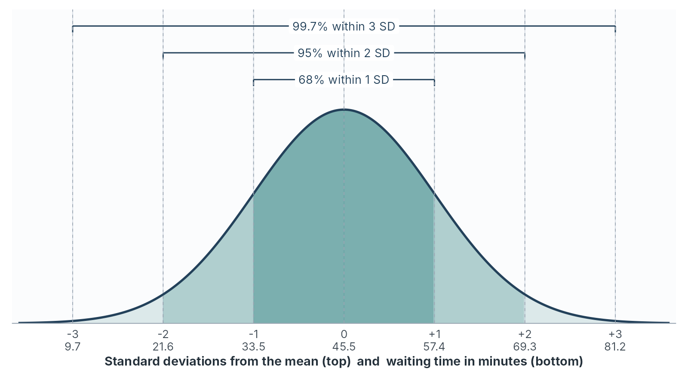

Part 2: The normal curve and z-scores
normal distribution, empirical rule, 68-95-99.7 rule, Chebyshev’s rule, z-score, standardised score, unusual values
Part 1 showed you how to read the shape of a distribution. Part 2 introduces the shape that most of statistics measures against, the normal distribution, and uses it to place a single value inside a distribution with one number, the z-score.
The normal distribution
The normal distribution is a symmetric, bell-shaped curve that describes how values spread around a centre when many small, independent influences add together. A customer’s waiting time is a sum of small influences. These include how many people arrived just before, how long each transaction took, and whether a colleague was on a break. When enough of them combine, the result tends towards the bell shape.
The normal curve is a theoretical model. You can think of it as an idealised histogram, drawn for an infinite number of cases with bars of zero width. No real dataset follows it exactly. Many come close enough for the model to answer practical questions, and part 3 shows you how to judge whether yours does.
Properties of the normal curve
Six properties define the normal distribution:
- It has one peak, at the mean.
- It is symmetric about the mean, so the mean, the median and the mode are equal.
- Its tails extend in both directions without limit, and they thin out quickly. Values far from the mean are possible and rare.
- Two numbers define it completely. The mean, \(\mu\), determines the peak location, and the standard deviation, \(\sigma\), determines the width of the curve.
- The total area under the curve is 1, which stands for 100 per cent of the cases.
- The area under the curve between two values equals the share of cases that fall between them.
Property 4 gives the notation. A variable \(X\) that follows a normal distribution with mean \(\mu\) and standard deviation \(\sigma\) is written
\[X \sim N(\mu, \sigma)\]
and read “X is normally distributed with mean mu and standard deviation sigma”. Some books write the variance, \(\sigma^2\), in the second position. Check which one a source uses before you copy a figure from it.
Property 6 provides the most practical value. The height of the curve at a single point is hard to interpret on its own. The area under the curve is a proportion, and a proportion is something a manager can use: the share of customers who wait longer than an hour, or the share of parcels that weigh less than the label says.
Many curves, one shape
Changing the mean slides the curve along the axis. Changing the standard deviation stretches or squeezes it. A branch with a mean wait of 45 minutes and a standard deviation of 12 has a wide, low curve. A branch with the same mean and a standard deviation of 3 has a narrow, tall one. The total area under each is still 1.
Every normal curve has the same shape once its horizontal axis is measured in standard deviations from the mean. That fact makes the rest of this chapter possible. One set of proportions, worked out once for a single reference curve, applies to every normal distribution there is.
The empirical rule
The empirical rule states the share of cases that fall within one, two and three standard deviations of the mean in any normal distribution:
- about 68 per cent lie within one standard deviation of the mean
- about 95 per cent lie within two standard deviations
- about 99.7 per cent lie within three standard deviations
It is also called the 68-95-99.7 rule.

Because the curve is symmetric, each share splits evenly between the two sides. If 95 per cent lie within two standard deviations, the remaining 5 per cent split into 2.5 per cent above \(\mu + 2\sigma\) and 2.5 per cent below \(\mu - 2\sigma\). The same reasoning puts 16 per cent above \(\mu + \sigma\), because \((100 - 68) \div 2 = 16\).
The rule against real data
Waiting time in the teaching dataset has a mean of 45.46 minutes and a standard deviation of 11.91. Table 2.7 compares what the rule predicts for 200 customers with what the data show.
| Band | Minutes | Rule predicts | Data holds | Data share |
|---|---|---|---|---|
| Within 1 SD | 33.5 to 57.4 | 136 | 133 | 66.5% |
| Within 2 SD | 21.6 to 69.3 | 190 | 193 | 96.5% |
| Within 3 SD | 9.7 to 81.2 | 199 | 199 | 99.5% |
The agreement is close. Chapter 1 found 133 customers within one standard deviation and said this chapter would make that figure precise: the rule predicts 68 per cent, and the data show 66.5 per cent.
Worked example 2.4
Using the empirical rule for a service promise
Waiting times have a mean of 45.5 minutes and a standard deviation of 11.9, and the distribution is close to normal.
Use the empirical rule to estimate the share of customers who wait longer than 69.3 minutes, and the share who wait between 33.6 and 69.3 minutes. Then check the first estimate against the data.
Longer than 69.3 minutes: \(69.3 = 45.5 + 2 \times 11.9\), so this is the tail beyond two standard deviations above the mean. The rule puts 95 per cent within two standard deviations, and the other 5 per cent split evenly between the two tails:
\[\frac{100\% - 95\%}{2} = 2.5\%\]
About 2.5 per cent, or 5 of 200 customers.
Between 33.6 and 69.3 minutes: \(33.6 = 45.5 - 11.9\), one standard deviation below the mean. The range runs from \(-1\) to \(+2\) standard deviations, so combine half of each band:
\[\frac{68\%}{2} + \frac{95\%}{2} = 34\% + 47.5\% = 81.5\%\]
About 81.5 per cent of customers.
Check against the data: Two customers waited longer than 69.3 minutes, at 77 and 90. The rule predicted about 5. Five customers fall more than two standard deviations below the mean, so the two tails contain 7 between them against a prediction of 10. The rule describes the centre of this distribution very well and its thin tails a little less well, which is typical of a real dataset. The small numbers in the tails are also where chance has the most influence.
A packing line fills bags of rice with a mean of 1,000 grams and a standard deviation of 4 grams. The fill weights are close to normal.
- Between which two weights do about 95 per cent of bags fall?
- What share of bags weigh more than 1,004 grams?
- What share weigh less than 988 grams?
- The label promises 992 grams or more. Roughly how many bags in 10,000 break that promise?
- Within two standard deviations: \(1{,}000 \pm 2 \times 4\), so 992 to 1,008 grams.
- \(1{,}004 = 1{,}000 + 4\), one standard deviation above. The share above is $(100% - 68%) = $ 16 per cent.
- \(988 = 1{,}000 - 3 \times 4\), three standard deviations below. The share beyond three standard deviations on one side is $(100% - 99.7%) = $ 0.15 per cent.
- \(992\) is two standard deviations below the mean, so 2.5 per cent of bags weigh less. In 10,000 bags that is about 250. The manager would raise the mean fill or tighten the standard deviation until the share was acceptable.
Chebyshev’s rule for any shape
The empirical rule applies only to distributions close to normal. Chebyshev’s rule applies to every distribution, regardless of its shape. For any number \(k\) greater than 1, at least
\[1 - \frac{1}{k^2}\]
of the cases lie within \(k\) standard deviations of the mean.
| Distance from the mean | Chebyshev guarantees at least | Empirical rule, if normal |
|---|---|---|
| 2 standard deviations | \(1 - 1/4 = 75\%\) | 95% |
| 3 standard deviations | \(1 - 1/9 = 88.9\%\) | 99.7% |
Chebyshev’s figures are floors. The true share is almost always higher, and for a normal distribution it is much higher. The rule gives you a guarantee you can use when the shape is unknown, skewed or heavy-tailed, and it trades precision for that guarantee.
Spending shows why the guarantee matters. Its standard deviation is 256.84 USD around a mean of 505.65. Two standard deviations either side runs from \(-8.03\) to 1,019.33 USD. The data place 190 of 200 customers in that band, 95 per cent, which matches the empirical rule exactly. The match hides a problem: all 10 customers outside the band are high spenders, and none are low. The empirical rule assumes the outside share splits evenly between the two tails, and here it splits 10 to 0. The lower limit, \(-8.03\) USD, is a spend no customer can make.
For a skewed variable, the percentages from the empirical rule can look right while the story they tell about the tails is misleading. Chebyshev’s floor of 75 per cent is safe for any shape, and it makes no claim about which side the outside cases fall on.
Monthly insurance claims at a small firm have a mean of 12,000 USD and a standard deviation of 3,000. The distribution is strongly right-skewed.
- Using Chebyshev’s rule, what share of months at least fall between 6,000 and 18,000 USD?
- What share at least fall within 2.5 standard deviations of the mean, and what range of claims is that?
- Why would the empirical rule be a poor choice here?
- \(6{,}000\) and \(18{,}000\) are \(12{,}000 \pm 2 \times 3{,}000\), so \(k = 2\). At least $1 - 1/2^2 = $ 75 per cent of months.
- \(k = 2.5\): at least $1 - 1/2.5^2 = 1 - 1/6.25 = 1 - 0.16 = $ 84 per cent of months, in the range \(12{,}000 \pm 2.5 \times 3{,}000\), from 4,500 to 19,500 USD.
- The empirical rule assumes a normal, symmetric shape. With strong right skew, the months outside two standard deviations will sit almost entirely on the high side, and the rule would report the split as even. Chebyshev’s floor makes no assumption about shape.
z-scores
A z-score, also called a standardised score, states how many standard deviations a value lies from the mean. For a value \(x\) in a sample with mean \(\bar{x}\) and standard deviation \(s\):
\[z = \frac{x - \bar{x}}{s}\]
For a population with mean \(\mu\) and standard deviation \(\sigma\) the formula takes the Greek letters, \(z = (x - \mu) / \sigma\). The arithmetic is the same.
Three facts follow from the formula:
- The sign gives the direction. A positive z-score lies above the mean and a negative one lies below. A z-score of 0 is the mean itself.
- The size gives the distance, in standard deviations. A z-score of \(-1.5\) lies one and a half standard deviations below the mean.
- The units cancel. The numerator and the denominator are both in minutes, or both in USD, so a z-score has no units. That lets you compare values measured on different scales, which Comparing values in different units uses.
Converting every value in a column to its z-score is called standardising the column. A standardised column always has a mean of 0 and a standard deviation of 1, whatever its original units.
Calculating a z-score
For respondent 58, who waited 77 minutes:
\[z = \frac{77 - 45.455}{11.905} = \frac{31.545}{11.905} = 2.65\]
Respondent 58 waited 2.65 standard deviations longer than the average customer.
From a z-score back to the original units
Rearranging the formula turns a z-score back into a value:
\[x = \bar{x} + z \times s\]
This answers questions that start from a position and ask for a value. For example: the wait that falls 1.5 standard deviations below the mean is
\[x = 45.455 + (-1.5) \times 11.905 = 45.455 - 17.858 = 27.6 \text{ minutes}\]
Worked example 2.5
Standardising the first five customers
The first five waiting times in the teaching dataset are 28, 39, 37, 48 and 61 minutes. The full column has a mean of 45.455 and a standard deviation of 11.905.
Calculate the z-score of each wait against the full column, and say in plain language what the largest one means.
Subtract the mean, then divide by the standard deviation.
| Respondent | \(x\) | \(x - \bar{x}\) | \(z\) |
|---|---|---|---|
| 1 | 28 | -17.455 | -1.47 |
| 2 | 39 | -6.455 | -0.54 |
| 3 | 37 | -8.455 | -0.71 |
| 4 | 48 | 2.545 | 0.21 |
| 5 | 61 | 15.545 | 1.31 |
Respondent 1 was served faster than most, at 1.47 standard deviations below the average. Respondents 2, 3 and 4 fall within one standard deviation of the mean, in the band that contains about two customers in three.
The largest z-score, in size, is respondent 1’s. The largest above the mean is respondent 5’s:
Respondent 5 waited 61 minutes, 1.31 standard deviations longer than the average customer. That is a long wait, and still a typical one: roughly one customer in ten waits this long or longer.
The empirical rule brackets the “one in ten”. Sixteen per cent of customers lie more than one standard deviation above the mean and 2.5 per cent lie more than two above, so a wait 1.31 standard deviations above falls between the two. The data agree: 19 of the 200 customers, 9.5 per cent, waited 61 minutes or longer. Part 3 shows how to find the share exactly.
Worked example 1.10 in chapter 1 used the same five values to find a standard deviation of 12.50 within the five. The z-scores here use the mean and standard deviation of all 200, because the question is where each customer falls in the full branch.
Check your working with the z-score calculator
The calculator below opens on respondent 58: a wait of 77 minutes against the mean of 45.455 and the standard deviation of 11.905. Work each z-score by hand first, then use the calculator to check it.
Three checks to run:
- One value: Leave the calculator as it opens. The working line shows \((77 - 45.455) / 11.905 = 2.65\), the figure you calculated for respondent 58.
- Five values: Replace 77 with
28, 39, 37, 48, 61. The table lists the five z-scores from - Back to minutes: Choose A value from a z-score and enter \(-1.5\). The answer is 27.6 minutes, the wait you found by rearranging the formula.
The calculator also reports an area below and an area above each z-score. Part 3 explains those areas and how to read them from a table.
Typical, unusual and extreme values
A z-score becomes a judgement once you set thresholds. This module uses three bands, taken from the empirical rule.
| z-score, ignoring the sign | Label | Share expected under a normal curve |
|---|---|---|
| Less than 2 | Typical | About 95 in 100 |
| 2 up to 3 | Unusual | About 4 or 5 in 100 |
| 3 or more | Extreme | About 3 in 1,000 |
“Unusual” is a statement about frequency. It says a value of this size turns up in roughly one case in twenty. In a file of 200 you should expect about 9 unusual values by chance alone. An unusual value is a prompt to look again, the same prompt the \(1.5 \times IQR\) fences gave you in chapter 1.
“Extreme” is stronger. Under a normal curve, a value three or more standard deviations from the mean turns up about 3 times in 1,000 cases. When you find one, check the record first, then the circumstances, and only then treat it as part of the ordinary spread.
The unusual waits in the teaching dataset
Seven of the 200 waiting times lie two or more standard deviations from the mean.
| Respondent | Wait, minutes | \(z\) | Band | Beyond the IQR fences? |
|---|---|---|---|---|
| 85 | 90 | 3.74 | Extreme | Yes |
| 149 | 12 | -2.81 | Unusual | Yes |
| 58 | 77 | 2.65 | Unusual | Yes |
| 189 | 14 | -2.64 | Unusual | Yes |
| 191 | 19 | -2.22 | Unusual | No |
| 138 | 20 | -2.14 | Unusual | No |
| 147 | 21 | -2.05 | Unusual | No |
The two rules largely agree. Every case beyond the chapter 1 fences also has a z-score beyond 2, and the z-score rule adds three short waits just inside the lower fence. The IQR rule works from quartiles and suits any shape. The z-score rule works from the mean and standard deviation and suits a distribution close to normal, which waiting time is.
The file contains 6 unusual values and 1 extreme one, against a normal-curve prediction of about 9 and 0.5. The counts agree closely, and the extreme case, respondent 85, needs a closer look.
Worked example 2.6
Explaining a z-score in plain language
Respondent 85 waited 90 minutes. The same customer gave a satisfaction score of 4.50, above the mean of 3.81.
Calculate the z-score for the wait, classify it, and write two sentences for a branch manager who has never heard of a z-score. Then say what you would check before acting on it.
The z-score:
\[z = \frac{90 - 45.455}{11.905} = \frac{44.545}{11.905} = 3.74\]
The band: \(3.74\) is beyond 3, so the wait is extreme.
For the manager:
One customer waited 90 minutes, nearly twice the average wait and far beyond anything else in the month. Waits this far from the average should happen fewer than 3 times in 1,000 customers, so this one needs an explanation.
The sentences convey the meaning of the z-score without using the symbol. They state the distance, the reference point and the rarity.
What to check first: A 90-minute wait paired with a satisfaction score of 4.50 is an odd combination, because long waits usually go with low satisfaction. Three explanations fit: the time was recorded wrongly, perhaps 9 or 19 minutes typed as 90, the customer chose to wait for a particular member of staff, or the customer was patient. The first is a data error to correct and record. The second and third are real events that belong in the file. The z-score told you where to look. The record and the circumstances tell you what you found.
Use the waiting-time mean of 45.455 minutes and standard deviation of 11.905.
- Calculate the z-score for waits of 20, 52 and 82 minutes, to two decimal places.
- Classify each as typical, unusual or extreme.
- Find the waiting time that sits exactly 2 standard deviations above the mean, and the one that sits 1 standard deviation below it.
- Write one plain-language sentence about the 82-minute wait for a manager.
- 20 minutes: \(z = (20 - 45.455) \div 11.905 = -25.455 \div 11.905 = -2.14\). 52 minutes: \(z = (52 - 45.455) \div 11.905 = 6.545 \div 11.905 = 0.55\). 82 minutes: \(z = (82 - 45.455) \div 11.905 = 36.545 \div 11.905 = 3.07\).
- 20 minutes is unusual, below the mean. 52 minutes is typical. 82 minutes is extreme, just past 3.
- Two above: \(45.455 + 2 \times 11.905 = 69.3\) minutes. One below: \(45.455 - 11.905 = 33.6\) minutes.
- For example: “A customer who waits 82 minutes has waited about 37 minutes longer than average, and a wait that long should happen to fewer than 3 customers in 1,000.”
Comparing values in different units
A z-score has no units, so it lets you compare a customer’s wait with the same customer’s spend, or a branch’s sales with its complaints. The question it answers is: which value is further from its own average, measured in that variable’s own spread?
Worked example 2.7
Which figure is most out of line?
Respondent 5 waited 61 minutes, spent 161.90 USD and gave a satisfaction score of 2.77.
| Variable | Value | Mean | Standard deviation |
|---|---|---|---|
Waiting_Time_Mins |
61 | 45.455 | 11.905 |
Spending |
161.90 | 505.650 | 256.839 |
Satisfaction |
2.77 | 3.814 | 0.740 |
Standardise all three values and decide which one lies furthest from its own average.
\[z_{\text{wait}} = \frac{61 - 45.455}{11.905} = 1.31\]
\[z_{\text{spend}} = \frac{161.90 - 505.650}{256.839} = -1.34\]
\[z_{\text{satisfaction}} = \frac{2.77 - 3.814}{0.740} = -1.41\]
All three are typical in size, between 1.3 and 1.5 standard deviations from their means. The satisfaction score is the furthest out, by a small margin. The raw numbers hide this completely: 343.75 USD below average sounds far larger than 1.04 points below average, and in the units of each variable’s own spread they are about the same distance.
The pattern across the three is the useful finding. This customer waited longer than most, spent less than most and was less satisfied than most. One customer proves nothing, and a manager who found the same pattern across many customers would have a lead to follow.
One caution applies. Spending is right-skewed, so a z-score of \(-1.34\) there does not indicate the same rarity as \(-1.34\) on a normal curve. The comparison of distances remains valid. The empirical-rule shares apply only to the two variables close to normal.
A student scores 68 in a statistics test where the class mean is 60 and the standard deviation is 5. The same student scores 75 in a marketing test where the class mean is 70 and the standard deviation is 10.
- Calculate both z-scores.
- In which test did the student perform better relative to the class?
- What statistics mark would match the student’s relative position in marketing?
- Statistics: \(z = (68 - 60) \div 5 = 8 \div 5 = 1.6\). Marketing: \(z = (75 - 70) \div 10 = 5 \div 10 = 0.5\).
- Statistics: The student ranks 1.6 standard deviations above the class there, against 0.5 in marketing, even though the raw marketing mark is higher.
- Convert \(z = 0.5\) back using the statistics mean and standard deviation: $x = 60 + 0.5 = $ 62.5.
Section summary
The normal distribution is a symmetric bell-shaped model fixed by its mean and standard deviation, and the area under it is the share of cases. The empirical rule puts about 68, 95 and 99.7 per cent of cases within one, two and three standard deviations, and waiting time in the teaching dataset follows it closely. Chebyshev’s rule gives a floor that applies to any shape. A z-score measures distance from the mean in standard deviations, and it converts back with \(x = \bar{x} + z s\). Values beyond 2 are unusual and values beyond 3 are extreme, and both are prompts to check the record.